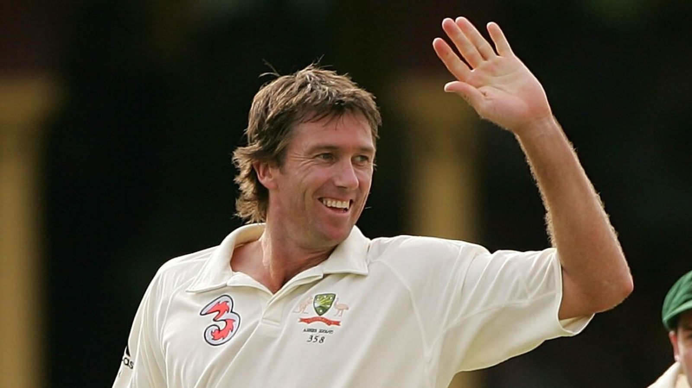
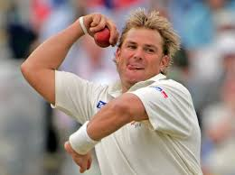

Click on the ICC below to go back to the Homepage

History |
70s and before |
Venues |
Sri lankan has many stadiums like Melbourne Cricket Ground (MCG): Melbourne, Victoria Sydney Cricket Ground (SCG): Sydney, New South Wales Adelaide Oval: Adelaide, South Australia The Gabba: Brisbane, Queensland Perth Stadium (Optus Stadium): Perth, Western Australia Bellerive Oval: Hobart, Tasmania Manuka Oval: Canberra, Australian Capital Territory Kardinia Park: Geelong, Victoria Cazalys Stadium: Cairns, Queensland Riverway Stadium: Townsville, Queensland |
world records |
Most ICC Cricket World Cup wins: 5 (1987, 1999, 2003, 2007, 2015) Most consecutive ICC Cricket World Cup wins: 3 (1999, 2003, 2007) Highest team total in a World Cup match: 417/6 against Afghanistan in 2015 Most runs in a calendar year (Test): Ricky Ponting, 1,544 runs in 2005 Most wickets in a calendar year (Test): Shane Warne, 96 wickets in 2005 Most wickets in Test cricket: Shane Warne, 708 wickets Most runs in Test cricket for Australia: Ricky Ponting, 13,378 runs Highest individual score in Test cricket for Australia: Matthew Hayden, 380 runs against Zimbabwe in 2003 Most dismissals by a wicketkeeper in Test cricket: Adam Gilchrist, 416 dismissal |
What place did they get in every world cup(odi) |
1975: Runners-Up 1979: Group Stage 1983: Group Stage 1987: Champions 1992: Round Robin Stage 1996: Runners-Up 1999: Champions 2003: Champions 2007: Champions 2011: Quarter-Finals 2015: Champions 2019: Semi-Finals 2023: Champion |

Glenn McGrath is one of Australia's greatest fast bowlers, known for his accuracy and consistency. He took 563 Test wickets and 381 ODI wickets during his career from 1993 to 20071. McGrath played a key role in Australia's three consecutive World Cup victories in 1999, 2003, and 200

Shane WarneShane Warne was one of the greatest leg-spin bowlers in cricket history, taking 708 Test wickets from 1992 to 2007. He is famous for his "Ball of the Century" to Mike Gatting in 1993, which showcased his incredible skill. Warne played a crucial role in Australia's 1999 World Cup victory and was instrumental in their Ashes successes.
 Mitchell Johnson
Mitchell Johnson
Mitchell Johnson is a former Australian cricketer, known for his left-arm fast bowling and left-handed batting. Born on November 2, 1981, in Townsville, Queensland, he played for Australia from 2005 to 20151. Johnson took 313 Test wickets and 239 ODI wickets, making him one of the most lethal bowlers of his era1. He played a key role in Australia's 2007 and 2015 World Cup victories and was awarded the ICC Cricketer of the Year in 2009 and 2014 Mitchell Starc is an Australian left-arm fast bowler renowned for his pace and accuracy. He made his ODI debut in 2010 and his Test debut in 2011. Starc played a crucial role in Australia's 2015 and 2023 ICC Cricket World Cup victories, earning the Player of the Tournament award in 2015. He holds the record for the most wickets in a single World Cup edition (27 in 2019) and is the fastest to reach 150 and 200 wickets in ODIs. Starc is also known for his powerful lower-order batting and has a top Test score of 99. Brett Lee is a former Australian fast bowler celebrated for his blistering pace and skill. He made his Test debut in 1999 and his ODI debut in 2000. Lee was instrumental in Australia's 2003 World Cup victory and took 310 Test wickets and 380 ODI wickets during his career. He also achieved the first hat-trick in T20 International cricket in 2007.
 Mitchell Starc
Mitchell Starc
 Brett Lee
Brett Lee
 Don Bradman
Don Bradman
Sir Donald Bradman, known as "The Don," is widely regarded as the greatest batsman in cricket history. Born on August 27, 1908, he had an extraordinary Test batting average of 99.94. Bradman scored 6,996 runs in 52 Test matches, including 29 centuries. He made his Test debut in 1928 and achieved his highest score of 334 against England in 1930. He is the person with the highest average and is considered the best cricket in history
 David warner
David warner
David Warner is an Australian cricketer known for his aggressive batting style. Born on October 27, 1986, he made his T20I debut in 2009 and his Test debut in 2011. Warner has scored over 8,700 Test runs, 6,900 ODI runs, and 3,200 T20I runs. He played a key role in Australia's 2015 and 2023 World Cup victories. Warner is the first Australian in 132 years to be selected for the national team without first-class cricket experience. His highest Test score is an unbeaten 335 against Pakistan in 2019.
Steve Smith is an Australian cricketer known for his exceptional batting skills. He has scored over 8,500 Test runs, including 32 centuries. Smith served as Australia's Test captain from 2015 to 2018 and made a remarkable comeback in the 2019 Ashes series, scoring 774 runs in four matches